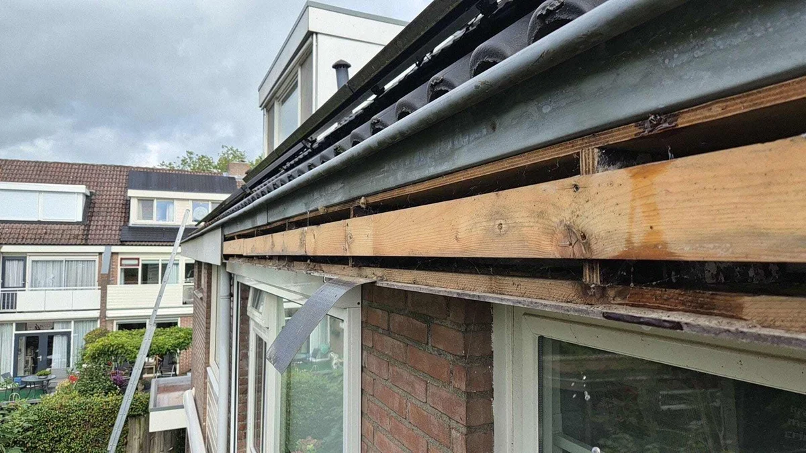

Schoorsteen
Schoorstenen veroorzaken vaak lekkage door voegwerk, lood, poreus metselwerk of een instabiele opbouw.
Een dakprobleem begint zelden met een duidelijke oorzaak. Daarom helpen we u eerst kiezen: gaat het om lekkage, slijtage, schoorsteenwerk, daklood, een plat dak, een schuin dak of een dakkapel? Vanuit daar komt u direct bij de dienst die past bij uw situatie.
Deze overzichtspagina stuurt u naar de juiste hoofddienst of tussenpagina. Zo blijft het advies logisch en wordt elke detailpagina sterker.
Water komt vaak op een andere plek binnen dan waar u het ziet. Start hier als u lekkage, vocht, schimmel of terugkerende schade ziet.
Bekijk lekkage keuzehulp Metselwerk & loodVoor schoorsteenrenovatie, lood vervangen, opnieuw opmetselen, pleisteren, metselwerk repareren of verwijderen.
Naar schoorsteendiensten Bitumen & afvoerVoor platte daken met lekkage, blazen, scheuren, slechte afwatering, overlagen, repareren of volledig vervangen.
Naar plat dak diensten Pannen & nokVoor dakrenovatie, isoleren, reinigen, nokrenovatie, dakgoten en andere werkzaamheden aan hellende daken.
Naar schuin dak diensten Waterdichte detailsVoor daklood vervangen, trapsgewijs lood, kozijnlood, dakraamlood en lood rondom schoorstenen of dakkapellen.
Naar loodafwerkingen Dakkapel & dakraamVoor dakkapelrenovatie, dakkapel lood vervangen, dakraamlood en dakdetails waar veel lekkages ontstaan.
Naar dakkapeldienstenBij twijfel is een dakinspectie vaak verstandiger dan meteen een reparatie kiezen. We kijken naar de oorzaak, de staat van het dakdeel en de kans op vervolgschade. Daarna weet u of herstellen, vervangen, reinigen, renoveren of juist afwachten logisch is.

De hoofdroutes hieronder verwijzen door naar de bijbehorende subdiensten. Zo vindt u snel de dienst die technisch aansluit op uw dakprobleem.
Schoorstenen veroorzaken vaak lekkage door voegwerk, lood, poreus metselwerk of een instabiele opbouw.
Bij een plat dak draait het om dakbedekking, naden, afschot, afvoeren en opstanden.
Bij hellende daken spelen dakpannen, nokvorsten, panlatten, goten en isolatie vaak samen.
Aansluitingen rond dakkapellen, dakramen en loodwerk zijn kleine details met grote gevolgen.
Kies eerst waar het probleem lijkt te zitten: schoorsteen, plat dak, schuin dak, dakkapel, lood of dakgoot.
Ga naar de hoofdpagina of keuzehulp die bij uw situatie past. Daar ziet u de logische subdiensten.
Als oorzaak of ernst nog niet duidelijk is, voorkomt inspectie dat er onnodig of verkeerd werk wordt uitgevoerd.
Stuur kort door wat u ziet of vermoedt. We denken mee en verwijzen u naar de juiste oplossing of plannen een inspectie als dat verstandiger is.